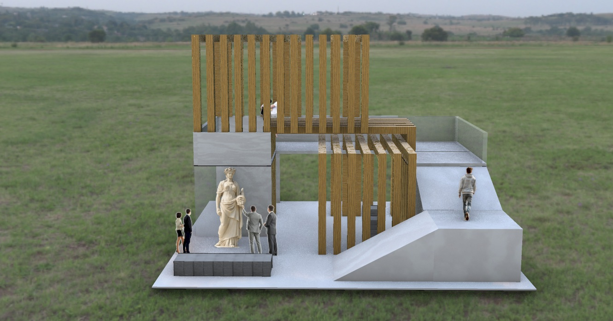
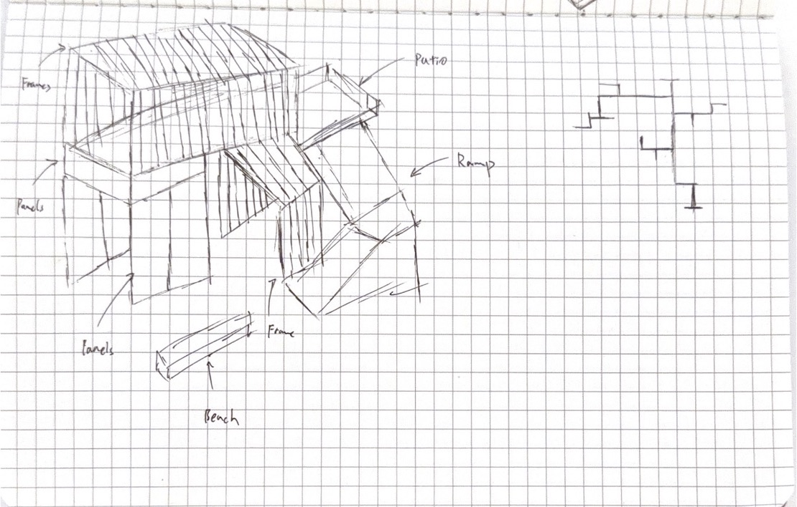
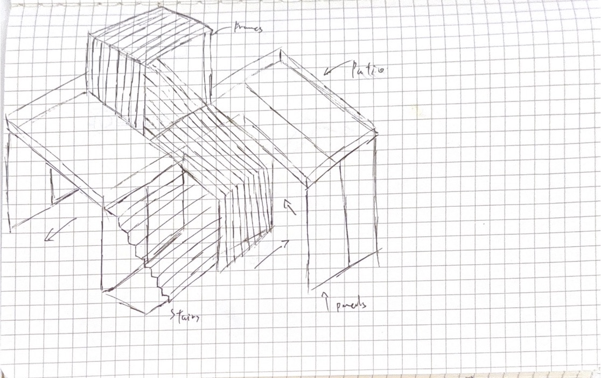

Sculpture Pavilion
Spatial design · IAT 233 · 2026
A two-level pavilion in Holland Park, Surrey, for showing sculpture. Repeated oak panels set the rhythm and frame the views as you walk through.

The design
Panel architecture
Repeated vertical oak panels define the rooms; rotated and layered, they make thresholds and guide you through.
A path through it
You meet the main sculpture at the entrance, pass smaller works on stone plinths, then take the ramp up.
Two ways to look
See the sculptures up close at ground level, or from above through the openings in the frames.
Materials
Oak frames, polished cement floors and ramp, stone brick plinths and glass railings upstairs.


Initial sketches

